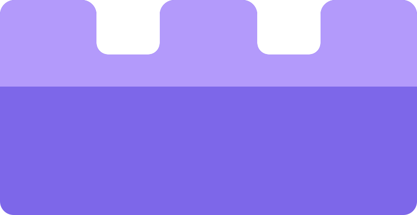
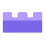
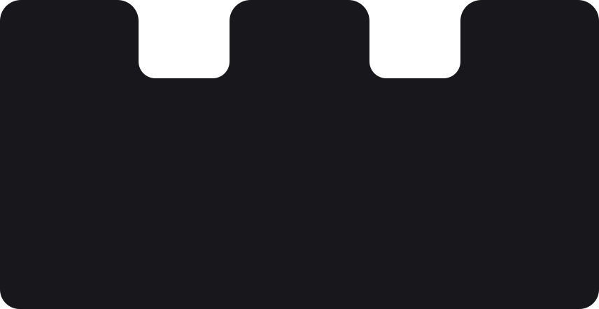

Oficjalny znak projektu. Jeden wzorzec SVG, wszystkie potrzebne formaty.

ICO: 16, 24, 32, 48, 64, 128 i 256 px.
Apple: nieprzezroczyste tło, 180 px.
Ikona maskowalna: zapas wokół znaku.

Ciemne tło, grawerowanie i nadruk w jednym kolorze.

Druk monochromatyczny i jasne materiały.